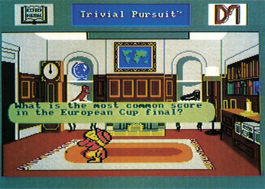
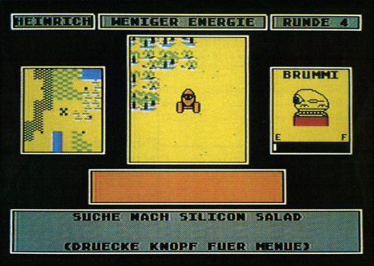

Familienspaß mit dem Computer
An kalten Wintertagen sitzt man gerne mit der Familie zusammen um gemeinsam zu spielen. Jetzt gibt es für diesen Zweck auch einige Computerspiele.
Weihnachten steht vor der Tür und damit auch das Problem des richtigen Geschenks. Hier haben wir noch einen Geschenktip in letzter Minute, denn wir nehmen zwei Computerspiele unter die Lupe, bei denen die ganze Familie mitspielen kann. Gleich zu Anfang wollen wir erwähnen, daß beide Spiele in voll eingedeutschten Versionen, also mit deutschen Texten auf dem Bildschirm und im Handbuch, erhältlich sind. Von Trivial Pursuit lag uns zu Redaktionsschluß aber nur die englischsprachige Version vor.
»Trivial Pursuit« ist ein Quiz-Spiel mit ungewöhnlichen Fragen und gehört als Brettspiel zu den weltweit erfolgreichsten Gesellschaftsspielen aller Zeiten. Das Spielfeld ist in etwa hundert Felder aufgeteilt, die sechs verschiedene Farben haben. Jede Farbe steht für ein Wissensgebiet, von Wissenschaft und Kunst bis zu Kunst und Unterhaltung. Außerdem gibt es ein Start/Ziel-Feld und sechs speziell markierte Wissens-Felder. Spielziel ist es, alle Wissensfelder zu besuchen, dort durch Beantworten einer Frage einen Keil für den Spielstein zu erhalten und dann mit allen sechs Keilen als erster im Ziel zu sein. Nach jedem Spielzug müssen Sie eine Frage aus einem Wissensgebiet beantworten. Finden Sie die richtige Antwort, dürfen Sie weiterspielen.

Die Fragen stellt der Computer aus einem Repertoire von etwa 3000 Stück zusammen. Je nach Frage erscheint nur der Text, manchmal aber auch eine begleitende Grafik. Manche Fragen nutzen sogar den Sound-Chip, indem eine kleine Melodie gespielt wird, zu der es dann eine Frage gibt. Im übrigen sind weitere Fragen-Pakete beim Hersteller in Vorbereitung. Ein kleiner technischer Gag am Rande: Die Datenkassette mit den Fragen wurde in einem speziellen Format aufgezeichnet, so daß ein und dieselbe Kassette sowohl vom C 64 wie auch vom Schneider CPC und dem Sinclair Spectrum gelesen werden kann.
Das zweite Spiel dieser Runde heißt Robot Rascals und ist ein recht verrücktes Kartenspiel für zwei bis vier Personen bei dem auch der Computer seine Hand kräftig im Spiel hat. Auf dem Planeten Laustenfownd sind einige wertvolle Dinge verlorengegangen. Diese Dinge müssen die Spieler mit Hilfe von ferngesteuerten Robotern finden.

Der Spielverlauf wird im wesentlichen von den Spielkarten bestimmt. Da gibt es zuerst einmal die Ding-Karten, die festlegen, welche Dinge welcher Spieler suchen muß. Natürlich weiß zu Anfang niemand, welche Dinge die anderen suchen müssen. Zusätzlich gibt es noch Joker und eine Killer-Karte unter den Spielkarten. Wer die Killer-Karte besitzt, kann unmöglich gewinnen, muß diese Karte also so schnell wie möglich wieder loswerden. Zu diesem Zweck gibt es die Glückskarten, von denen jeder Spieler zu Beginn einer Runde eine ziehen muß. Diese Karten schreiben beispielsweise vor, daß Ding-Karten zu tauschen, klauen oder aufzudecken sind.
Aber auf die Spieler warten noch einige weitere Gags. So können sie sich gegenseitig schon gefundene Dinge klauen, diese wieder verstecken oder in einem See versenken. Die Roboter können kaputtgehen, Energie sammeln und sich gegenseitig austricksen. Um das Spiel noch etwas komplizierter zu machen, treibt der Computer sein Unwesen, indem er Runde für Runde eine Zusatzspielregel einführt, die meist negative Effekte auf die Spieler hat.
Robot Rascals ist in verschiedenen Schwierigkeitsgraden spielbar. So ist es möglich, mit Kindern (ab etwa sieben Jahre) zu spielen, aber auch eine Erwachsenenrunde mit einem tollen, schwierigen Strategie-Spiel zu unterhalten.
Beeindruckend ist auch die Grafik. Die Animation der Roboter gehört zum witzigsten, was Computer-Spieler je gesehen haben und einige weitere Spezialeffekte zeigen, was der C 64 so alles kann. Der Sound ist zwar keine technische Meisterleistung, aber derart gut komponiert, daß die Rhythmen der Titelmusik auch noch Stunden nach dem Spiel im Ohr bleiben.
(bs)| Titel | Trivial Pursuit |
|---|---|
| Spielidee | 11/15 |
| Grafik | 9/15 |
| Sound | 8/15 |
| Schwierigkeit | |
| Motivation | 12/15 |
| Besonderheiten | 3000 Fragen, weitere in Vorbereitung |
| Hersteller | Domark |
| Preis | 39 Mark (Kassette), 59 Mark (Diskette) |
| Bezugsquelle | Rushware, Daimlerstr. 11, 4044 Kaarst 2 |
| Titel | Robot Rascals |
|---|---|
| Spielidee | 12/15 |
| Grafik | 11/15 |
| Sound | 11/15 |
| Schwierigkeit | |
| Motivation | 13/15 |
| Besonderheiten | mindestens zwei bis vier Spieler |
| Hersteller | Electronic Arts |
| Preis | 59 Mark (Diskette) |
| Bezugsquelle | Ariolasoft, Carl-Bertelsmann-Str. 161, Postfach 1350, 4830 Gütersloh 1 |